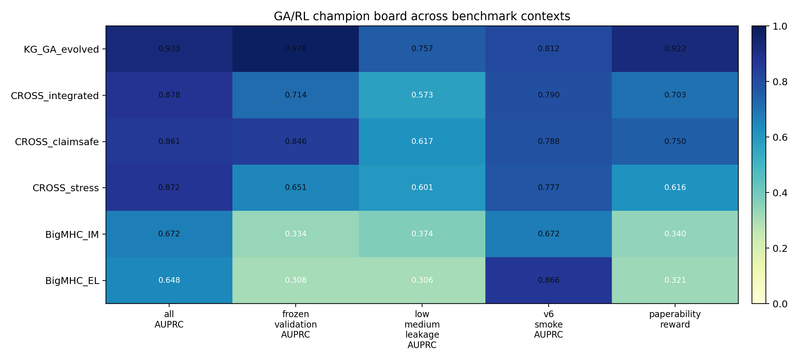
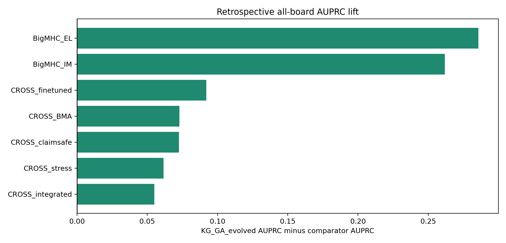
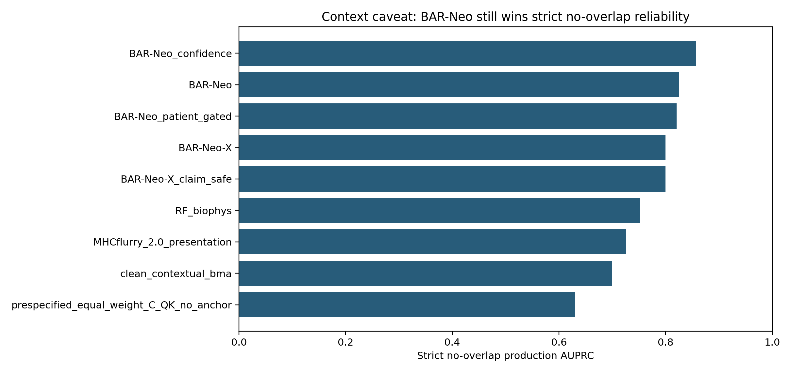
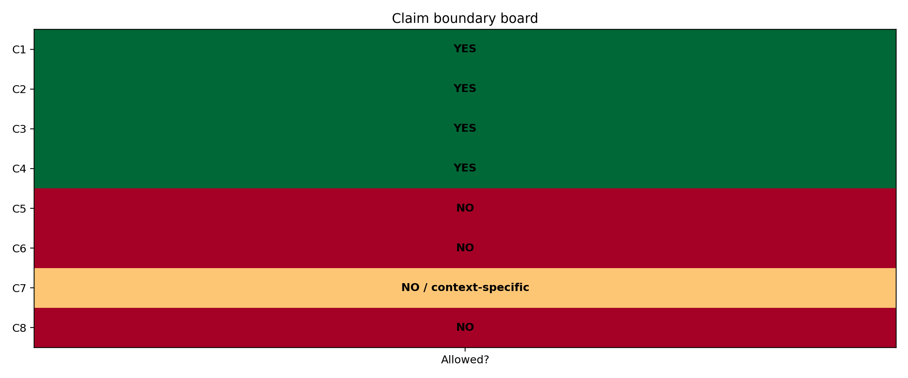
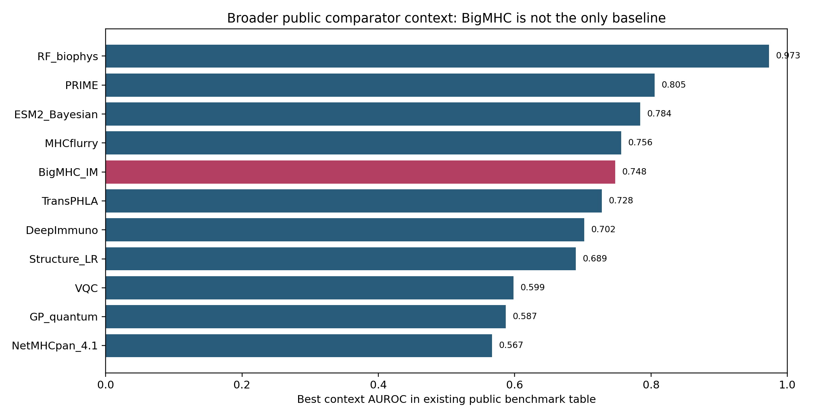

Champion Heatmap
All-board, frozen validation-like, low-leakage, v6, paperability.
PNGThis page compares the evolved knowledge-graph genetic controller against BigMHC, fixed CROSS-Neo scores, claim-safe fallback, strict no-overlap production rankers, and paperability-aware Darwin-RL outputs.
Use KG_GA_evolved as the champion discovery/experiment-priority algorithm. Use CROSS_claimsafe as the conservative claim-safe fallback. Use BAR-Neo_confidence for strict no-overlap production reliability. Do not claim prospective immunogenicity until locked mutant-vs-WT/decoy wetlab readout passes.

All-board, frozen validation-like, low-leakage, v6, paperability.
PNG
KG-GA delta against core comparators.
PNG
Where BAR-Neo reliability still wins.
PNG
Allowed and blocked claims.
PNG
MHCflurry, PRIME, TransPHLA, NetMHCpan, RF_biophys and others.
PNG| algorithm | algorithm family | claim track | all AUPRC | all AUROC | all top96 hits | frozen validation AUPRC | low medium leakage AUPRC | v6 smoke AUPRC | paperability reward | neo strict AUPRC | headline score | primary disposition |
|---|---|---|---|---|---|---|---|---|---|---|---|---|
| KG_GA_evolved | new_ga_controller | production/experiment-priority | 0.933 | 0.943 | 96.000 | 0.978 | 0.757 | 0.812 | 0.922 | NA | 0.840 | CHAMPION for retrospective + validation-like + low-leakage benchmark; freeze before prospective wetlab |
| CROSS_claimsafe | claim_safe_crossneo | claim-safe prioritization | 0.861 | 0.864 | 96.000 | 0.846 | 0.617 | 0.788 | 0.750 | NA | 0.740 | Claim-safe fallback when GA/RL proxy/product features are too risky |
| CROSS_integrated | fixed_integrated_crossneo | production/experiment-priority | 0.878 | 0.896 | 96.000 | 0.714 | 0.573 | 0.790 | 0.703 | NA | 0.700 | Fixed integrated comparator; strong but less novel than KG-GA |
| CROSS_BMA | bayesian_internal | claim-safe prioritization | 0.861 | 0.860 | 89.000 | 0.660 | 0.636 | 0.767 | 0.613 | NA | 0.679 | Comparator or component |
| CROSS_stress | stress_guarded_internal | claim-safe prioritization | 0.872 | 0.873 | 91.000 | 0.651 | 0.601 | 0.777 | 0.616 | NA | 0.676 | Comparator or component |
| CROSS_finetuned | finetuned_internal | experiment-priority | 0.841 | 0.863 | 84.000 | 0.606 | 0.669 | 0.681 | 0.570 | NA | 0.651 | Comparator or component |
| BigMHC_IM | public_immunogenicity | external comparator + strict no-overlap production | 0.672 | 0.722 | 84.000 | 0.334 | 0.374 | 0.672 | 0.340 | 0.777 | 0.504 | External public comparator/component, not CROSS-Neo claim engine |
| BigMHC_EL | public_presentation | external comparator | 0.648 | 0.719 | 70.000 | 0.308 | 0.306 | 0.866 | 0.321 | NA | 0.453 | External public comparator/component, not CROSS-Neo claim engine |
| BAR-Neo_confidence | production_reliability_ranker | strict no-overlap production | NA | NA | NA | NA | NA | NA | NA | 0.857 | 0.051 | Best strict no-overlap production reliability baseline; compare separately from 2,715-board GA |
| BAR-Neo | production_reliability_ranker | strict no-overlap production | NA | NA | NA | NA | NA | NA | NA | 0.825 | 0.050 | Best strict no-overlap production reliability baseline; compare separately from 2,715-board GA |
| BAR-Neo_patient_gated | production_reliability_ranker | strict no-overlap production | NA | NA | NA | NA | NA | NA | NA | 0.820 | 0.049 | Best strict no-overlap production reliability baseline; compare separately from 2,715-board GA |
| BAR-Neo-X | production_reliability_ranker | strict no-overlap production | NA | NA | NA | NA | NA | NA | NA | 0.800 | 0.048 | Best strict no-overlap production reliability baseline; compare separately from 2,715-board GA |
| BAR-Neo-X_claim_safe | production_reliability_ranker | strict no-overlap production | NA | NA | NA | NA | NA | NA | NA | 0.800 | 0.048 | Best strict no-overlap production reliability baseline; compare separately from 2,715-board GA |
| RF_biophys | neoimmune_stack_baseline | strict no-overlap production | NA | NA | NA | NA | NA | NA | NA | 0.752 | 0.045 | Comparator or component |
| MHCflurry_2.0_presentation | neoimmune_stack_baseline | strict no-overlap production | NA | NA | NA | NA | NA | NA | NA | 0.726 | 0.044 | Comparator or component |
| clean_contextual_bma | neoimmune_stack_baseline | strict no-overlap production | NA | NA | NA | NA | NA | NA | NA | 0.699 | 0.042 | Comparator or component |
| prespecified_equal_weight_C_QK_no_anchor | neoimmune_stack_baseline | strict no-overlap production | NA | NA | NA | NA | NA | NA | NA | 0.630 | 0.038 | Comparator or component |
| KG_GA_evolved_controller | new_ga_controller | production/experiment-priority + strict no-overlap production | NA | NA | NA | NA | NA | NA | NA | 0.624 | 0.037 | Production GA/RL branch in NeoImmune stack; strong but not clean-track allowed |
| Wave8_TCR_SelfSim_no_exact | clean_local_tcr | strict no-overlap clean | NA | NA | NA | NA | NA | NA | NA | 0.619 | 0.037 | Clean local TCR baseline; useful ablation/control |
| Wave8_TCR_motif_only | clean_local_tcr | strict no-overlap clean | NA | NA | NA | NA | NA | NA | NA | 0.604 | 0.036 | Clean local TCR baseline; useful ablation/control |
| Wave8_TCR_SelfSim_full | clean_local_tcr | strict no-overlap clean | NA | NA | NA | NA | NA | NA | NA | 0.582 | 0.035 | Clean local TCR baseline; useful ablation/control |
| VQC | neoimmune_stack_baseline | strict no-overlap clean | NA | NA | NA | NA | NA | NA | NA | 0.454 | 0.027 | Comparator or component |
| Stack_mean_E1 | neoimmune_stack_baseline | strict no-overlap clean | NA | NA | NA | NA | NA | NA | NA | 0.447 | 0.027 | Comparator or component |
| Wave8_TCR_only | neoimmune_stack_baseline | strict no-overlap clean | NA | NA | NA | NA | NA | NA | NA | 0.441 | 0.026 | Clean local TCR baseline; useful ablation/control |
| KG_GA_fixed_integrated | fixed_integrated_crossneo | production/experiment-priority | NA | NA | NA | NA | NA | NA | NA | NA | 0.000 | Comparator or component |
| KG_GA_fixed_claimsafe | claim_safe_crossneo | claim-safe prioritization | NA | NA | NA | NA | NA | NA | NA | NA | 0.000 | Comparator or component |
| BigMHC_IM_inside_GA | public_immunogenicity | external comparator component | NA | NA | NA | NA | NA | NA | NA | NA | 0.000 | External public comparator/component, not CROSS-Neo claim engine |
| BigMHC_EL_inside_GA | public_presentation | external comparator component | NA | NA | NA | NA | NA | NA | NA | NA | 0.000 | External public comparator/component, not CROSS-Neo claim engine |
| GA_TCR_expert_component | neoimmune_ga_rl_component | production/experiment-priority | NA | NA | NA | NA | NA | NA | NA | NA | 0.000 | Comparator or component |
| GA_MD_control_component | neoimmune_ga_rl_component | production/experiment-priority | NA | NA | NA | NA | NA | NA | NA | NA | 0.000 | Comparator or component |
| GA_foreignness_component | neoimmune_ga_rl_component | production/experiment-priority | NA | NA | NA | NA | NA | NA | NA | NA | 0.000 | Comparator or component |
| comparator | delta all AUPRC | delta frozen validation AUPRC | delta low medium leakage AUPRC | delta v6 smoke AUPRC | delta paperability reward | wins | tested metrics | win fraction | disposition |
|---|---|---|---|---|---|---|---|---|---|
| CROSS_claimsafe | 0.073 | 0.131 | 0.140 | 0.024 | 0.172 | 8.000 | 8.000 | 1.000 | champion wins all tested axes |
| CROSS_integrated | 0.055 | 0.264 | 0.184 | 0.021 | 0.219 | 8.000 | 8.000 | 1.000 | champion wins all tested axes |
| CROSS_BMA | 0.073 | 0.318 | 0.121 | 0.045 | 0.310 | 8.000 | 8.000 | 1.000 | champion wins all tested axes |
| CROSS_stress | 0.062 | 0.327 | 0.156 | 0.035 | 0.306 | 8.000 | 8.000 | 1.000 | champion wins all tested axes |
| CROSS_finetuned | 0.092 | 0.372 | 0.088 | 0.130 | 0.353 | 8.000 | 8.000 | 1.000 | champion wins all tested axes |
| BigMHC_IM | 0.262 | 0.644 | 0.383 | 0.139 | 0.582 | 8.000 | 8.000 | 1.000 | champion wins all tested axes |
| BigMHC_EL | 0.286 | 0.670 | 0.451 | -0.054 | 0.601 | 7.000 | 8.000 | 0.875 | champion wins most axes |
BigMHC is only one public comparator. Existing repo context also includes RF_biophys, MHCflurry, PRIME, TransPHLA, DeepImmuno, NetMHCpan_4.1, VQC, GP_quantum, Structure_LR, and ESM2_Bayesian. These rows are context-only AUROC benchmarks with possible overlap/training-status caveats, not locked same-board AUPRC.
| method | n context rows | total scored | datasets with auroc | mean context AUROC | best context AUROC | min context AUROC | claim use |
|---|---|---|---|---|---|---|---|
| RF_biophys | 8.000 | 3816.000 | 4.000 | 0.891 | 0.973 | 0.753 | context-only, AUROC-only in this repo; do not use as locked same-board AUPRC unless rescored |
| PRIME | 8.000 | 3839.000 | 4.000 | 0.669 | 0.805 | 0.567 | context-only, AUROC-only in this repo; do not use as locked same-board AUPRC unless rescored |
| ESM2_Bayesian | 1.000 | 311.000 | 1.000 | 0.784 | 0.784 | 0.784 | context-only, AUROC-only in this repo; do not use as locked same-board AUPRC unless rescored |
| MHCflurry | 8.000 | 3578.000 | 4.000 | 0.696 | 0.756 | 0.637 | context-only, AUROC-only in this repo; do not use as locked same-board AUPRC unless rescored |
| BigMHC_IM | 5.000 | 2318.000 | 2.000 | 0.645 | 0.748 | 0.542 | context-only, AUROC-only in this repo; do not use as locked same-board AUPRC unless rescored |
| TransPHLA | 8.000 | 3587.000 | 4.000 | 0.681 | 0.728 | 0.580 | context-only, AUROC-only in this repo; do not use as locked same-board AUPRC unless rescored |
| DeepImmuno | 1.000 | 319.000 | 1.000 | 0.702 | 0.702 | 0.702 | context-only, AUROC-only in this repo; do not use as locked same-board AUPRC unless rescored |
| Structure_LR | 1.000 | 311.000 | 1.000 | 0.689 | 0.689 | 0.689 | context-only, AUROC-only in this repo; do not use as locked same-board AUPRC unless rescored |
| VQC | 1.000 | 319.000 | 1.000 | 0.599 | 0.599 | 0.599 | context-only, AUROC-only in this repo; do not use as locked same-board AUPRC unless rescored |
| GP_quantum | 1.000 | 319.000 | 1.000 | 0.587 | 0.587 | 0.587 | context-only, AUROC-only in this repo; do not use as locked same-board AUPRC unless rescored |
| NetMHCpan_4.1 | 1.000 | 319.000 | 1.000 | 0.567 | 0.567 | 0.567 | context-only, AUROC-only in this repo; do not use as locked same-board AUPRC unless rescored |
| benchmark scope | method | n scored | n pos | AUROC | claim boundary |
|---|---|---|---|---|---|
| wave11_public_test::cedar_partial | RF_biophys | 909.000 | 851.000 | 0.956 | context only; AUROC-only public benchmark, possible overlap/training-status caveats |
| wave11_public_test::cedar_partial | MHCflurry | 845.000 | 787.000 | 0.737 | context only; AUROC-only public benchmark, possible overlap/training-status caveats |
| wave11_public_test::cedar_partial | TransPHLA | 736.000 | 678.000 | 0.728 | context only; AUROC-only public benchmark, possible overlap/training-status caveats |
| wave11_public_test::cedar_partial | PRIME | 898.000 | 840.000 | 0.684 | context only; AUROC-only public benchmark, possible overlap/training-status caveats |
| wave11_public_test::cedar_partial | BigMHC_IM | 898.000 | 840.000 | 0.542 | context only; AUROC-only public benchmark, possible overlap/training-status caveats |
| wave11_public_test::itsndb | ESM2_Bayesian | 311.000 | 130.000 | 0.784 | context only; AUROC-only public benchmark, possible overlap/training-status caveats |
| wave11_public_test::itsndb | RF_biophys | 319.000 | 136.000 | 0.753 | context only; AUROC-only public benchmark, possible overlap/training-status caveats |
| wave11_public_test::itsndb | BigMHC_IM | 319.000 | 136.000 | 0.748 | context only; AUROC-only public benchmark, possible overlap/training-status caveats |
| wave11_public_test::itsndb | DeepImmuno | 319.000 | 136.000 | 0.702 | context only; AUROC-only public benchmark, possible overlap/training-status caveats |
| wave11_public_test::itsndb | Structure_LR | 311.000 | 130.000 | 0.689 | context only; AUROC-only public benchmark, possible overlap/training-status caveats |
| wave11_public_test::itsndb | MHCflurry | 319.000 | 136.000 | 0.637 | context only; AUROC-only public benchmark, possible overlap/training-status caveats |
| wave11_public_test::itsndb | VQC | 319.000 | 136.000 | 0.599 | context only; AUROC-only public benchmark, possible overlap/training-status caveats |
| wave11_public_test::itsndb | GP_quantum | 319.000 | 136.000 | 0.587 | context only; AUROC-only public benchmark, possible overlap/training-status caveats |
| wave11_public_test::itsndb | TransPHLA | 318.000 | 135.000 | 0.580 | context only; AUROC-only public benchmark, possible overlap/training-status caveats |
| wave11_public_test::itsndb | PRIME | 319.000 | 136.000 | 0.567 | context only; AUROC-only public benchmark, possible overlap/training-status caveats |
| wave11_public_test::itsndb | NetMHCpan_4.1 | 319.000 | 136.000 | 0.567 | context only; AUROC-only public benchmark, possible overlap/training-status caveats |
| wave11_public_test::nepdb | RF_biophys | 572.000 | 151.000 | 0.973 | context only; AUROC-only public benchmark, possible overlap/training-status caveats |
| wave11_public_test::nepdb | TransPHLA | 562.000 | 150.000 | 0.694 | context only; AUROC-only public benchmark, possible overlap/training-status caveats |
| wave11_public_test::nepdb | MHCflurry | 413.000 | 151.000 | 0.655 | context only; AUROC-only public benchmark, possible overlap/training-status caveats |
| wave11_public_test::nepdb | PRIME | 609.000 | 263.000 | 0.620 | context only; AUROC-only public benchmark, possible overlap/training-status caveats |
| wave11_public_test::tesla_mmc4 | RF_biophys | 605.000 | 37.000 | 0.884 | context only; AUROC-only public benchmark, possible overlap/training-status caveats |
| wave11_public_test::tesla_mmc4 | PRIME | 605.000 | 37.000 | 0.805 | context only; AUROC-only public benchmark, possible overlap/training-status caveats |
| wave11_public_test::tesla_mmc4 | MHCflurry | 599.000 | 37.000 | 0.756 | context only; AUROC-only public benchmark, possible overlap/training-status caveats |
| wave11_public_test::tesla_mmc4 | TransPHLA | 605.000 | 37.000 | 0.722 | context only; AUROC-only public benchmark, possible overlap/training-status caveats |
| claim item | answer | evidence | boundary |
|---|---|---|---|
| Is GA/RL the best current algorithm on the 2,715-row retrospective CROSS-Neo board? | YES | KG_GA_evolved all AUPRC 0.933 / AUROC 0.943 / top96 96/96. | Retrospective labels; not prospective wetlab proof. |
| Does GA/RL beat public BigMHC in this local board? | YES | KG_GA all AUPRC 0.933 vs BigMHC_IM 0.672 and BigMHC_EL 0.648. | BigMHC remains public comparator and useful feature, not an obsolete method. |
| Does GA/RL remain strong on frozen validation-like sources? | YES | KG_GA frozen validation-like AUPRC 0.978 / AUROC 0.999, top24 contains all 11 positives. | Validation-like split is still retrospective, not prospective clinical validation. |
| Does GA/RL dominate low/medium leakage subset? | YES | KG_GA low/medium leakage AUPRC 0.757; next strongest among CROSS comparators is finetuned 0.669. | Leakage risk reduced, not eliminated. |
| Is GA/RL best on v6 smoke confirmatory board? | NO | BigMHC_EL has v6 AUPRC 0.866; KG_GA has 0.812. KG_GA is still strong but not the v6 AUPRC winner. | Small n=24 smoke board; all top24 recover 17/24 because the board itself has 17 positives. |
| Is GA/RL allowed as clean science track? | NO | NeoImmune GA/RL includes public predictor/product-value components and is flagged clean_track_allowed=False. | Use as production/experiment-priority branch; keep clean local track separate. |
| Does GA/RL beat strict no-overlap production reliability rankers? | NO / context-specific | Strict no-overlap production AUPRC: BAR-Neo_confidence 0.857 (n=388) vs KG_GA_evolved_controller 0.624 (n=1875). | Strict no-overlap rows are model-availability-specific and separate from the 2,715-row GA board; use BAR-Neo for reliability and KG-GA for integrated discovery. |
| Can we call it immunogenicity proof? | NO | All current wins are label/benchmark/prioritization wins. | Prospective mutant > WT/decoy activation and killing assays are required. |
| module | current status | evidence | gap | priority |
|---|---|---|---|---|
| Knowledge graph | implemented | 51 KG nodes / 62 edges in KG-GA package; method-mining graph also exists. | Need graph-node removal ablations for final method paper. | high |
| Genetic algorithm controller | implemented | 45 generations x 96 population; best all AUPRC 0.933. | Need same-budget random search and GA-only vs guarded-GA ablations. | high |
| RL controller | blueprint/paperability scaffold | Darwin-RL method and paperability reward graphs exist, but no trained RL policy score column yet. | Train or simulate policy-learning over mutation/action choices; otherwise call it Darwin/RL blueprint, not trained RL. | highest |
| Claim-safe fallback | implemented | CROSS_claimsafe top96 96/96, paperability 0.750, strong fallback. | Use when production GA features are considered too risky. | medium |
| Public comparator graft | implemented | BigMHC IM/EL scored 2,715 rows and used as external comparator/features. | Public training overlap audit remains needed before manuscript feature claims. | high |
| Prospective wetlab lock | not yet passed | v6 packet and assay interpreter exist; no real wetlab outcomes yet. | Freeze KG-GA score/thresholds and run mutant/WT/decoy assay readout. | highest |
/home/seungho/personal/THCA_data_analysis/project/results/cross_neo_kg_ga_evolutionary_ensemble_2026_05_10/kg_ga_benchmark.tsv/home/seungho/personal/THCA_data_analysis/project/results/cross_neo_kg_ga_evolutionary_ensemble_2026_05_10/kg_ga_v6_smoke_wetlab_comparison.tsv/home/seungho/personal/THCA_data_analysis/project/results/cross_neo_paperability_darwin_rl_2026_05_10/paperability_algorithm_ranking.tsv/home/seungho/personal/THCA_data_analysis/project/results/neoimmune_stack_2026_05_10/metrics/leaderboard_production_track_strict_no_overlap.tsv/home/seungho/personal/THCA_data_analysis/project/results/neoimmune_stack_2026_05_10/metrics/ga_rl_algorithm_metrics.tsv/home/seungho/personal/THCA_data_analysis/project/results/cross_neo_product_demo_2026_05_10/strong_competitors/strong_competitor_context_public_benchmarks.tsv{kind=link}
{kind=link}
{kind=link}
{kind=link}
{kind=link}